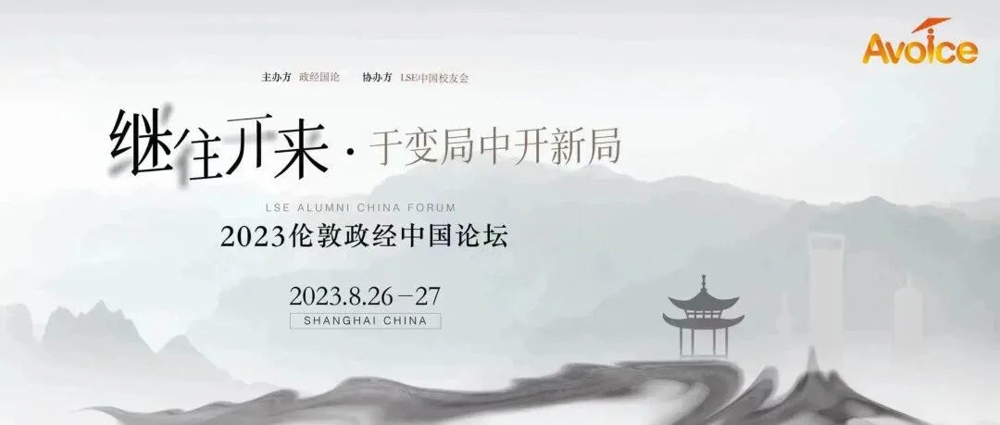
以下文章来源于政经国论 ，作者政经国论

伦敦政治经济学院中国校友论坛。最前沿的话题，最犀利的时评，最精彩的碰撞，期待你的关注！

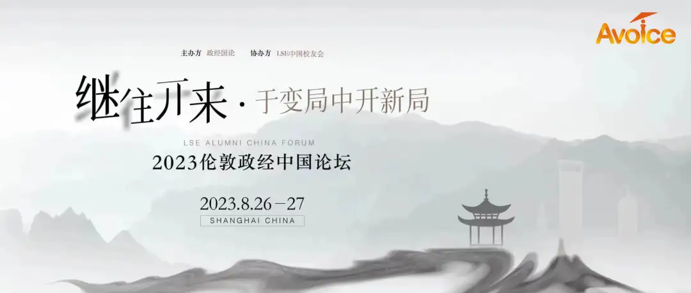

2023政经国论宣传片
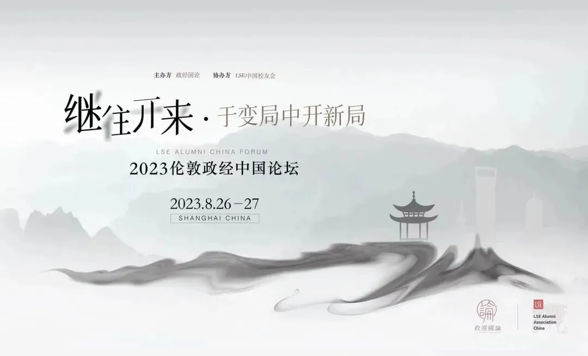
2023 伦敦政经中国论坛
继往开来：于变局中开新局
8.26 / 8.27
上海静安洲际酒店
· 目录 ·
一、论坛简介
二、论坛日程
三、开场嘉宾
四、分论坛简介
五、酒会
六、会务信息
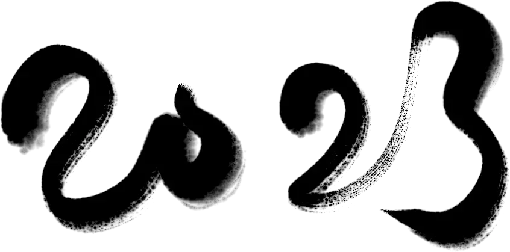

论坛简介
Introduction of LACF
癸卯兔年，世界局势接连迎来挑战，“不稳定，不确定，难预料”是当下的关键词。全球产业链迎来重构，以发展内循环为目标，国际经济形势也随即迎来改变。在高通胀的背景下，全球经济增长持续放缓，伴随人工智能发展浪潮迭代，人才市场就业格局迎来挑战。在这个全球化的时代，作为新青年我们又将如何提升民族自信并带领传统文化迈向世界？中国将如何迈着坚定的步子，于变局中开新局，开辟未来的道路？
在2023年，伦敦政经中国论坛将继续汇聚各领域专家和学者，分享他们对中国未来发展的看法和建议。本论坛将聚焦当下宏观经济、青年就业、文化传播和新能源等领域，探讨中国在变革中面临的机遇和挑战，以及如何创新与发展。
论坛日程
Schedule

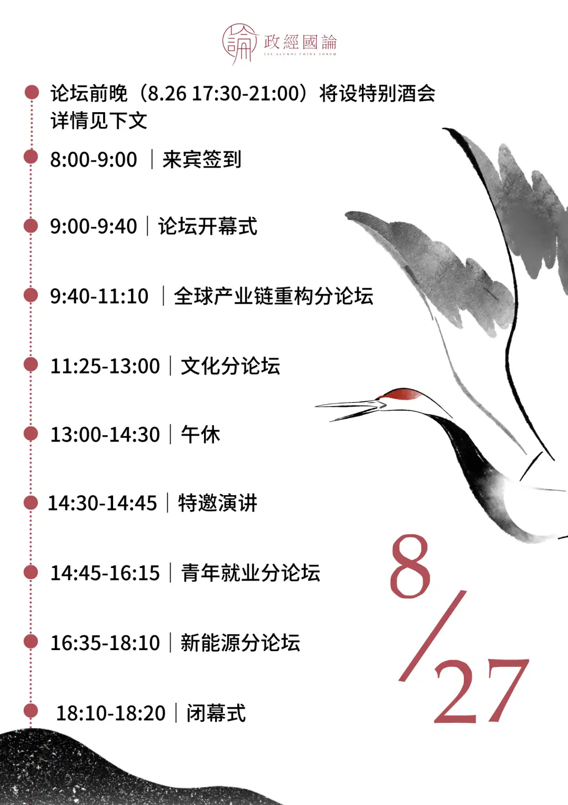
开场嘉宾
Keynote
徐 洪 才
中国政策科学研究会经济政策委员会副主任，中国欧美同学会经济研究中心主任，中国与全球化智库特邀高级研究员，全国工商联智库专家。
特邀青年代表
何 超 欣
特邀青年代表。世界大学气候变化联盟首席青年官，香港百仁基金会副主席。
分论坛简介
Panel Introduction
全球产业链重构分论坛
· 全球产业链重构 ·
新趋势下的破局之机
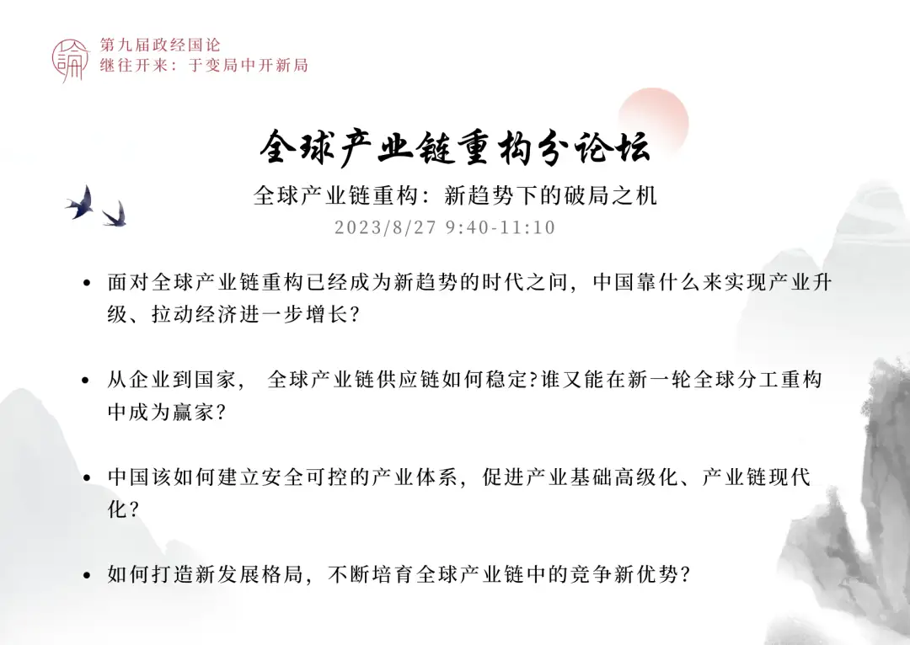
随着全球步入后疫情时代，在多重因素的冲击之下，全球化生产秩序呈现转折，原已形成的全球产业链暴露出了灵活性不足等许多问题，亟需深度调整。一方面，全球产业链呈现出智能化、数字化、绿色化的特点，未来产业与战略性新兴产业成为各国加速发展的重点领域；在另一方面，全球产业链的风险性与不确定性急剧升高，呈现出本土化、区域化、短链化特点，“脱钩断链”的危机时有发生。身处百年未有之大变局，中国既面临着“需求收缩、供给冲击、预期转弱”三重压力，同时也蕴含着推动产业转型升级、巩固提升产业体系优势、增强产业链韧性的新机遇。中国该如何立足新发展阶段，完善安全可控的产业体系，促进产业基础高级化、产业链现代化？
· 嘉宾阵容 ·
徐 洪 才
中国政策科学研究会经济政策委员会副主任，中国欧美同学会经济研究中心主任，中国与全球化智库特邀高级研究员，全国工商联智库专家。
杨 丹 辉
中国社会科学院工业经济研究所二级研究员、创新工程项目首席专家、未来产业研究组召集人，中国社会科学院大学教授，博士生导师，被授予国家有突出贡献中青年专家，享受国务院特殊津贴。
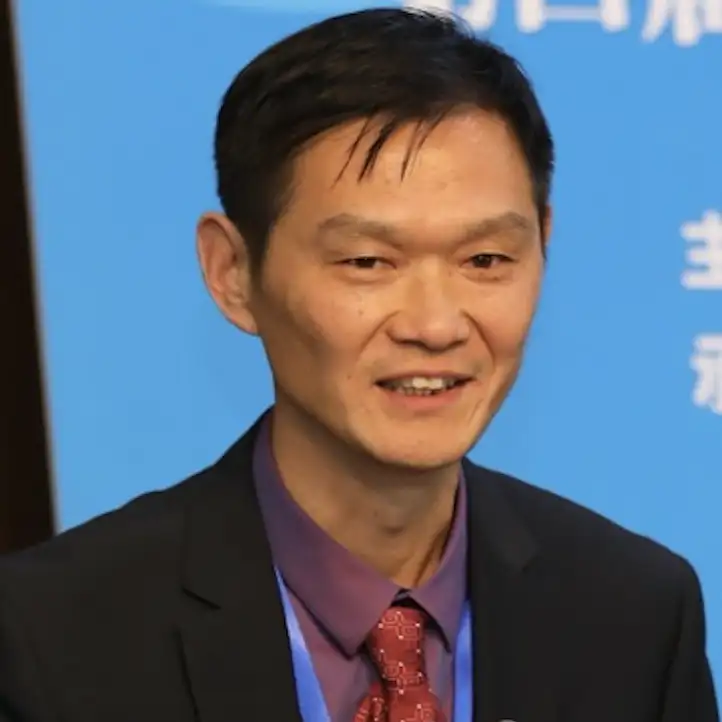
程 亚 文
上海外国语大学国际关系与公共事务学院教授，兼任中国宏观经济学会理事、盘古智库学术委员。研究领域：全球化与政治变迁、比较政治等。
刘 典
复旦大学中国研究院副研究员，兼任工业和信息化法治战略与管理工信部重点实验室研究员，北京科技创新中心研究基地研究员。
文化分论坛
· 文化共时代一色 ·
延续发展与创新
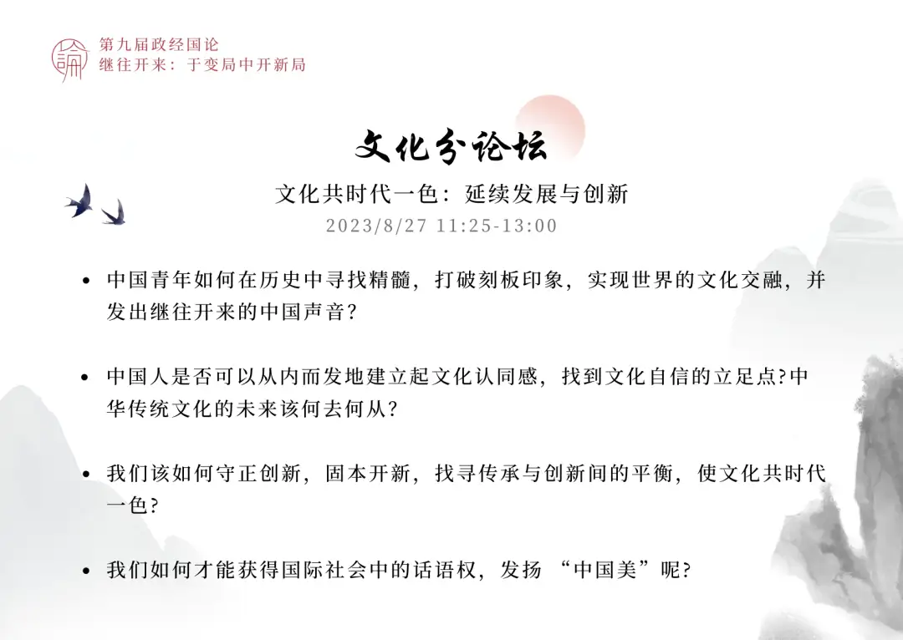
近年来，国潮品牌、中国电影、国风动漫、汉服穿搭等极具“中华美”的产业获得了越来越多的关注。然而，也有观察者担心，新青年们对传统文化的热忱在逐渐消亡，大众对中华文化的欣赏仍浮于表面。国际上，中国文化产业的成果似乎难以走出国门，西方国家对于中华文化仍抱有“东方学”的偏见与“功夫明星”的刻板印象。该如何在新时代讲好中国故事、让中华传统文化有效地“走出去”？
· 嘉宾阵容 ·
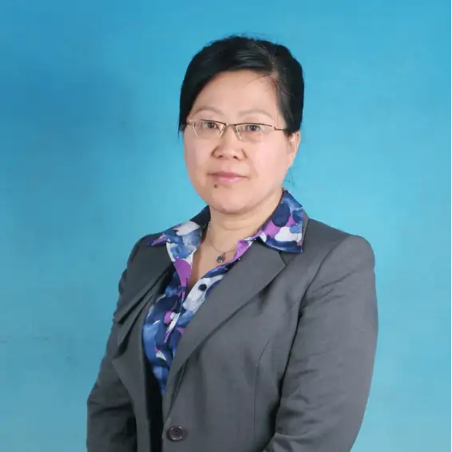
王 敬 慧
清华大学外文系教授，澳研中心主任、中国外国文学学会比较文学与跨文化研究会副会长、中国先秦史学会国学双语研究会副会长、2019-22年伦敦商务孔院中方院长。研究领域: 比较文学与跨文化翻译研究。
戴 晓 云
中国传媒大学艺术研究院教授、博导。中国美术家协会会员、中国宗教研究会会员、敦煌吐鲁番学会会员、国际博物馆学会会员、中国图书评论协会会员。美国哈佛大学访问学者。
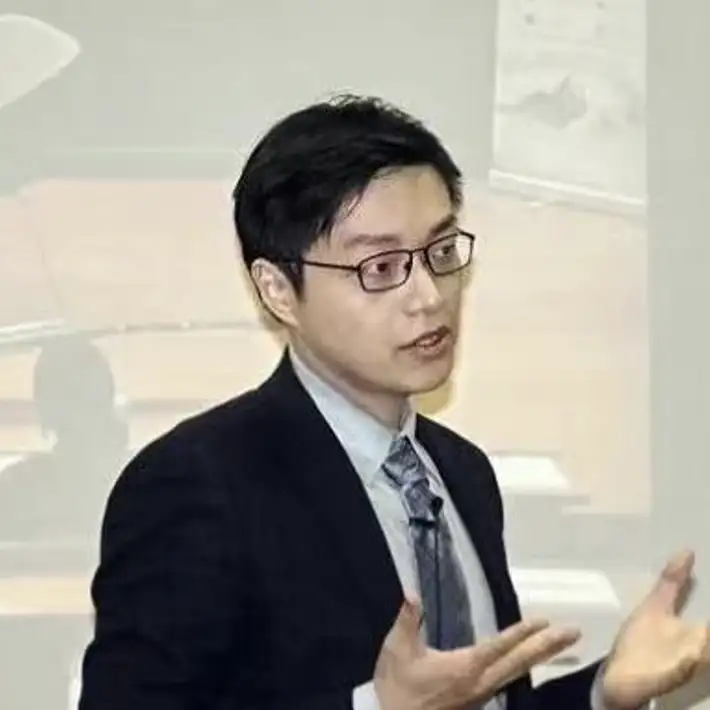
胡 肖 然
伦敦政治经济学院（LSE）管理学助理教授，博士生及研究生指导教授。主要从事创新，文化，以及领导力方向的量化研究，是用中国文化和实践构建解决世界性问题之理论的积极倡导者。
柳 青 瑶
青年作曲、音乐制作人、琵琶演奏者、传统文化推广者。中国青少年新媒体协会理事、中国民族管弦乐协会会员、APEC未来之声杰出青年领袖、G20二十国集团中国理事会青年艺术家、天津市音乐家协会会员。
青年就业分论坛
· 打破求职困境 ·
新时代的“诗和远方”
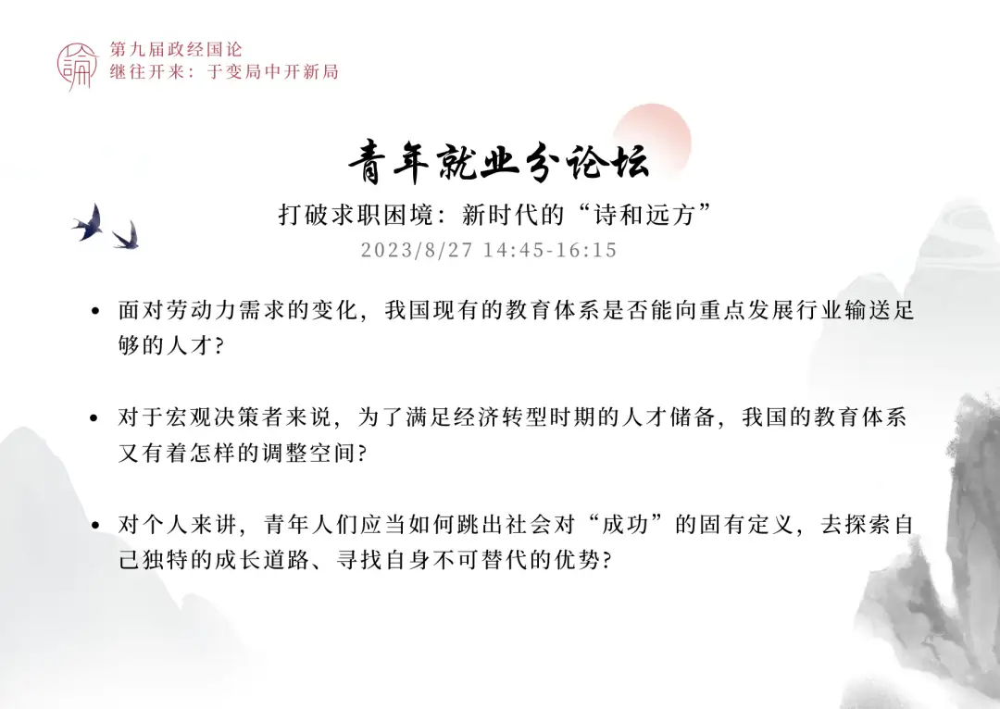
2023年第一季度的城镇青年失业率高达18.3%。同时，据教育部统计数据，本届全国高校毕业生人数将达到1158万。一边是高居不下的失业率，一边每年1000多万的毕业生涌入市场，“高学历”不再是稀缺资源，其逐渐降低的‘敲门砖’价值使我们不得不审视我国现有的教育体系。“孔乙己的长衫”，“鼠鼠文学”的大热让我们不得不思考学历贬值带来的就业难题以及年轻人对现实与理想巨大差距的无力感而可能出现的心理问题。承受着中国产业转型的阵痛，背负着世界范围内人工智能革命的压力，深处“学历内卷”旋涡中的学生们重新思考高等教育对个人的意义，教育制度应该做出怎样的调整都是今日之话题。
· 嘉宾阵容 ·
张 军
著名经济学家。现任复旦大学文科资深教授、经济学院院长、中国经济研究中心主任；第八届国务院学位委员会学科评议组成员和理论经济学联席召集人、教育部全国高校经济学教指委副主任、复旦大学学位评定委员会副主任暨社科与管理学部主任。兼任上海经济学会副会长、中国经济社会理事会理事等。
罗 斯 高
（Scott Douglas Rozelle）斯坦福大学国际研究所Helen Farnsworth主席、高级研究员、教授。北京大学，人民大学等高校兼职教授。获得“庆祝中华人民共和国成立70周年”纪念章。
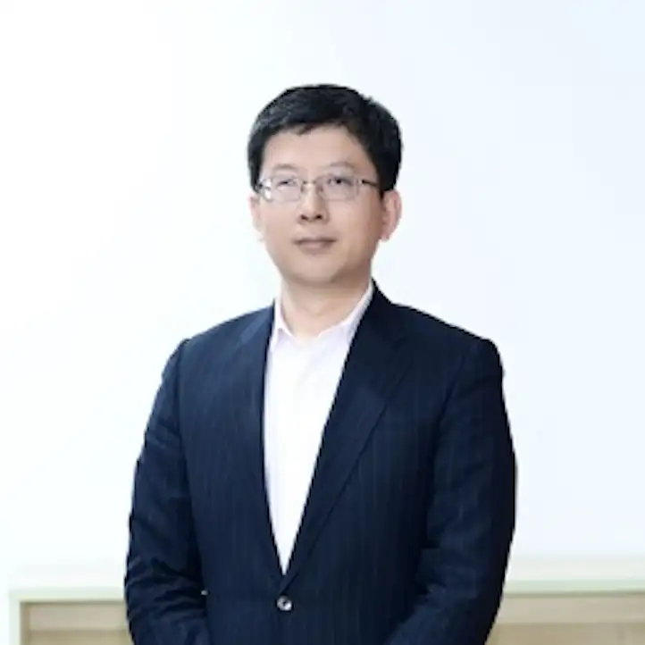
聂 日 明
上海金融与法律研究院研究员，经济学博士，先后毕业于浙江大学、复旦大学，长期从事公共政策研究，主要关注中国政治与经济、商业创新。
郑 雅 君
毕业于复旦大学社会学系、复旦大学高等教育研究所，现为香港大学教育学院在读博士研究生。主要研究方向为文化社会学视角下的教育公平与学生发展，热门著作有《金榜题名之后》。
新能源分论坛
· 绿色转型·
数智化浪潮下的新局面
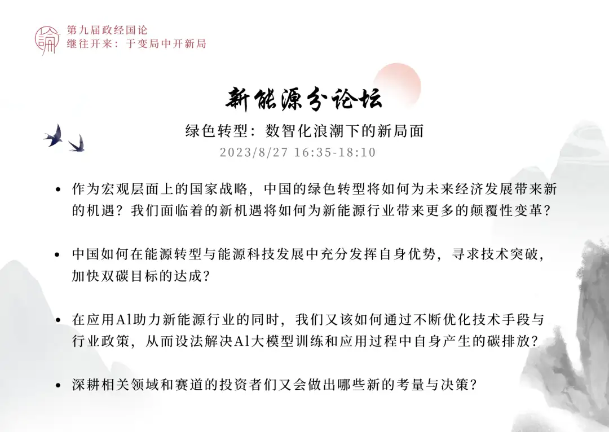
2020年底，中国明确提出双碳目标。国家能源局今年发表多篇指导意见为新能源领域面临的机遇以及挑战指明道路。作为宏观国家战略，中国的绿色转型将为未来经济发展带来新的机遇。我国的新能源市场需要积极应对挑战，识变从宜，以高效方式实现绿色转型现今，科技技术间的相互作用与赋能带来了开辟了许多崭新的局面；例如，光伏技术企业已着手利用人工智能算法提高产量以及能源利用率。 AI在能源领域的应用又有着怎样的发展契机？未来，在绿色转型和推进能源数字化智能化发展的背景下，深耕新能源行业的投资者们又会做出哪些新的考量与决策？
· 嘉宾阵容 ·
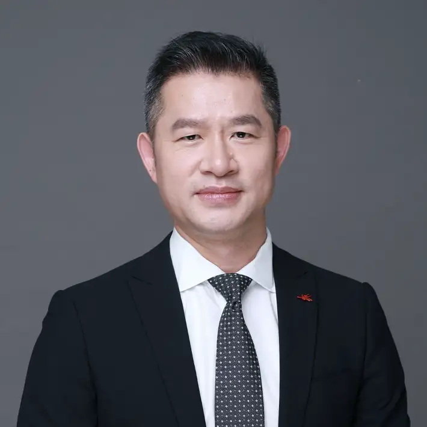
葛 兴 安
全球碳交易资深专家、绿色和可持续金融专家。现任盟浪副总裁、北京绿色金融和可持续发展研究院任特邀高级研究员、深圳市绿色金融协会副会长。
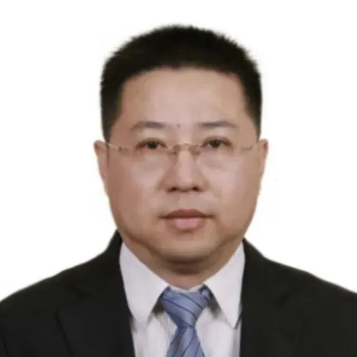
龚 建 军
北京易联汇能网络股份有限公司董事长，拥有多家公司致力于服务全球能源行业，打造全球能源互联网平台的高新技术企业。
尹 明
启高资本创始合伙人，曾任启明创投执行董事。专注工业硬科技、高端制造、可持续能源和交通领域的早期投资。
王 苡 憬
2060影响力投资咨询创始合伙人&CEO。中国影响力投资首位“福布斯30x30”，世界经济论坛全球杰出青年。毕业于剑桥大学，并为中国首位“影响力投资世界论坛”奖学金获得者。杭州市青年人才大使。
酒会
LACF Cocktail Party
「曲水流觞之夜」
兰秋盛筵 悟言畅怀
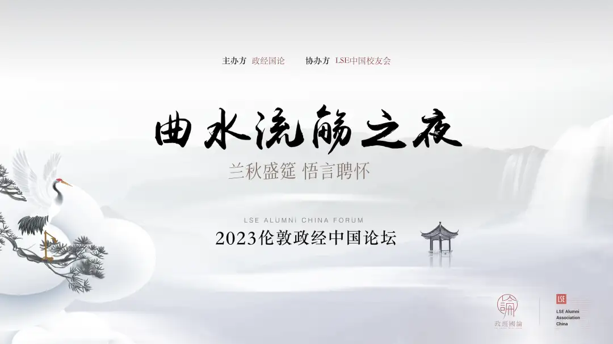
永和九年（353年）三月初三上巳日，晋代贵族、会稽内史王羲之偕亲朋谢安、孙绰等42位全国军政高官，在兰亭修禊后，举行饮酒赋诗的“曲水流觞”活动，引为千古佳话。这一儒风雅俗，一直留传至今。本场酒会借兰亭之名，愿到场的宾客“或取诸怀抱，悟言一室之内”。
酒会时间 Time
8月26日（周六）17:30-21:00
酒会地址 Location
上海静安洲际酒店
（静安区恒丰路500号）
着装要求 Dress Code
晚礼服(Black Tie)
商务正装(Business Formal)
同时鼓励大家穿着具有中国元素的服饰
报名方式 Registration
有意向参加的观众可在报名论坛后勾选参与酒会（扫描文末二维码，进入报名小程序）。
为保证酒会的多元化，我们会进行一定的筛选，酒会邀请会以邮件的方式发送，请注意查收。
左右滑动查看往届酒会及本届酒会场地
会务信息
Information
时间 / Time
8月26日-8月27日
门票 / Tickets
线下论坛（8.27）
普通票价 259元
VIP票价 399元
✨ VIP专属福利 ✨
近距离嘉宾交流机会
更佳的视野与观感
拥有国论专属礼品
高质量精英社交区
绿色快速签到通道
酒会（8.26）
票价 459元
长按以上二维码
或点击文末“阅读原文”购票
第九届伦敦政经中国论坛
我们不见不散
欢迎大家长按图片扫码加入
「2023LACF官方观众群」获取更多最新信息
若群二维码过期或有其它相关疑问
请添加负责人微信进行咨询
主办方
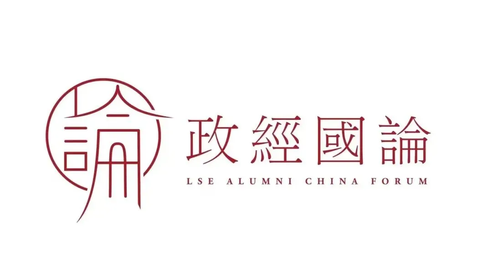
伦敦政经中国论坛于2015年创立，着眼于中国经济、社会、文化发展，力图为各界来宾提供与世界顶级学者及政商界领袖交流的机会。
协办方
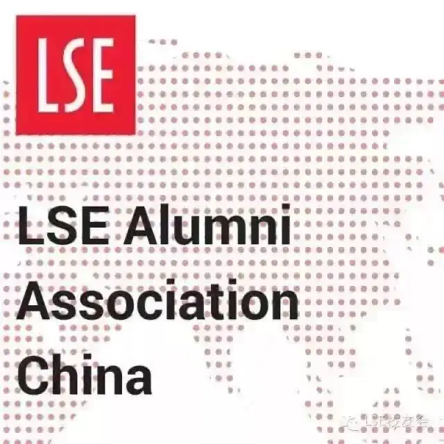
合作伙伴
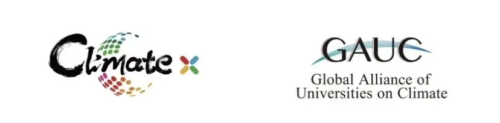
战略合作伙伴
钻石级合作伙伴
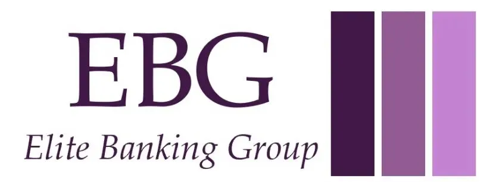
伴手礼合作伙伴
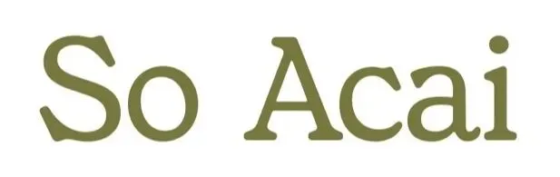
特别支持
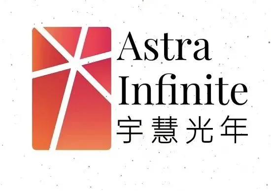
宣传合作伙伴
（排名不分先后）
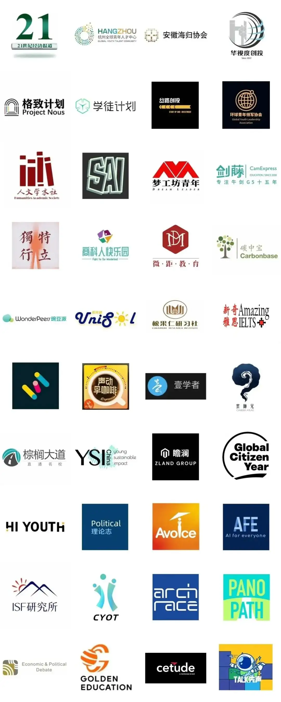
KOL合作伙伴
（排名不分先后）
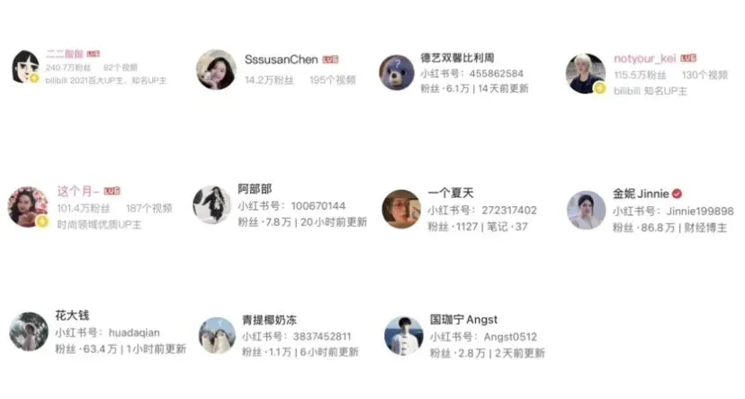
特别鸣谢
（排名不分先后）
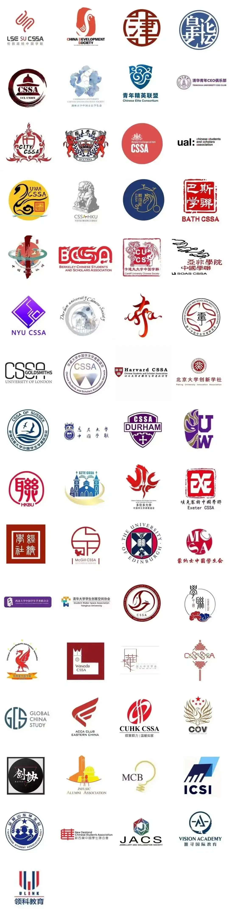
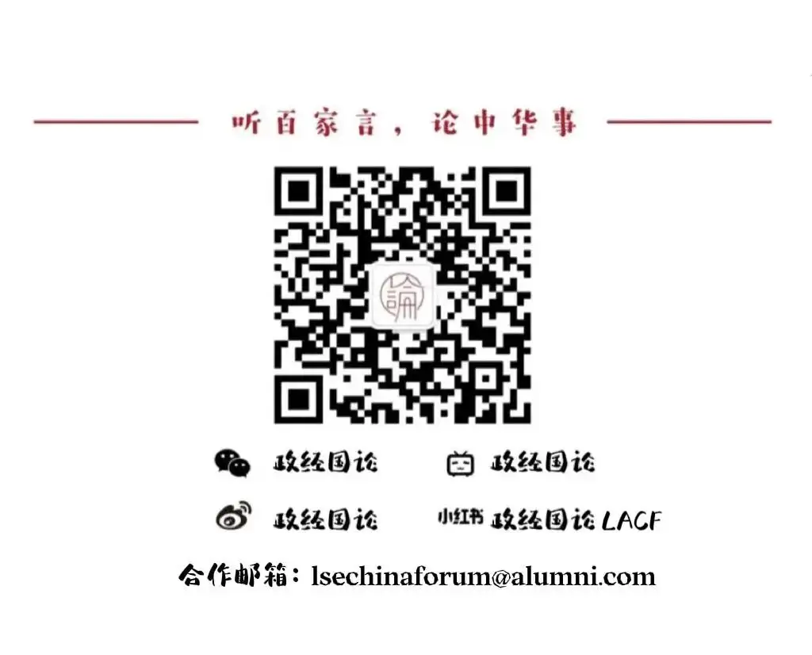
「听百家言，论中华事」
- 2023 LACF -